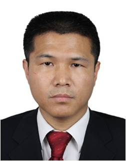

|  | 孟祥举 教授 浙江大学(西溪校区)西七教学楼506室 Tel: 0571-88273698 Email:mengxj@zju.edu.cn |
| 1976年5月生于安徽。 1995-1999年在吉林大学获得学士学位； 1999-2004年在吉林大学获得博士学位。 2004-2005年日本横滨国立大学博士后(JSPS) 2005-2006年日本东京工业大学博士后(JSPS) 2006-2007年日本产业技术综合研究所博士后 2009年-2015年浙江大学特聘副研究员。 2015年至今为浙江大学化学系教授。 研究方向： 分子筛材料的合成、表征和性能研究； 介孔材料的合成、表征和性能研究； 多相催化反应的研究； 绿色催化氧化反应的研究。 在Chem. Rev., Acc. Chem. Res., J. Am. Chem. Soc., Angew. Chem. Int. Ed.等国际知名期刊上发表论文160余篇(总引用次数>4000，H-index: 35)，获授权专利10余项。获得奖励： 2014年获得国家自然科学基金委的优秀青年项目； 2015年获得浙江省自然科学基金委杰出青年项目； 2015年入选浙江省151人才工程； 2017年获首届中国分子筛青年奖。
|
|
您所在的位置：首页 >> 团队成员 >>孟祥举